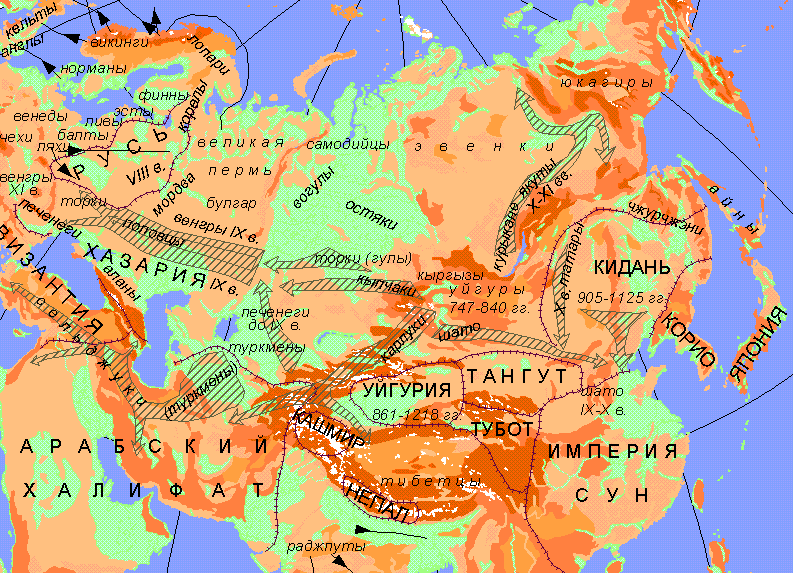

Л.Н. Гумилев. Соседи хазар
Карта 2. Миграции народов Евразии в IX≈XI вв. н.э.
|  |
| Условные обозначения |

Легенда
Аланы - степной народ северо-иранской группы, родственный осетинам. Венеды - общее название для группы племен полабских славян: бодричей, лютичей, поморян и лужицких сербов: покоренные в XII в. немцами, эти племена были онемечены. Викинги - это те норманны, которые бросали свои семьи, составляли дружины и занимались морским разбоем (IX-XI вв.); уход юноши к викингам рассматривался родными как позорное падение, откуда нет возврата к жизни. Курыканы - тюркоязычное племя на берегах Байкала с очень высокой культурой обработки железа: разбитые предками бурят в XI в., курыканы бежали на Лену; предки якутов. Кыпчаки - западнодинлинское тюркоязычное племя, получившее от русских название "половцы" за соломенно-желтый цвет волос (полова - рубленная солома). Кыргызы - динлинское тюркоязычное племя, обитавшее в Минусинской котловине, занимавшееся оседлым скотоводством и земледелием и имевшее письменность. Ливы - финно-угорское племя, жившее на берегах Рижского залива и Чудского озера; частью истреблено ливонскими рыцарями в XIII в., частью слилось с латышами. Раджпуты - народность в Индии; образовались из смешения пришлых саков и эфталитов с аборигенами долины Инда. Тангут - государство на северной границе Китая (в Ордосе, западном Ганьсу и Нинся), оседлое, тибетское по языку. Торки - тюркская народность, в Х в. прикочевавшая на Русь и поселенная по р. Роси для охраны границы от половцев. Тубот - тибетское царство в северо-восточном Тибете, возникшее в начале XI в. уничтоженное чжурчжэнями в 1131 г. Хазары - оседлый народ, обитавший в дельте Волги и низовьях Терека; создали в VII-Х вв. могучее государство, разбитое Святославом Игоревичем в 965 г. Чжурчжэни - маньчжуры, народ тунгусской группы, создавший империю Кинь (1115-1235). Шато - племя среднеазиатской группы хуннов, жившее в Джунгарии.
Ссылки
Следующие страницы ссылаются на данную карту:
- Гумилёв Л. Н. Изменения климата и миграции кочевников.
- Гумилёв Л. Н. Соседи хазар.
Карта выполнена А. Родионовым в 1999 г.
Эта страница была последний раз обновлена 08/26/08.
|
|
06/10/20 - 03:44 |